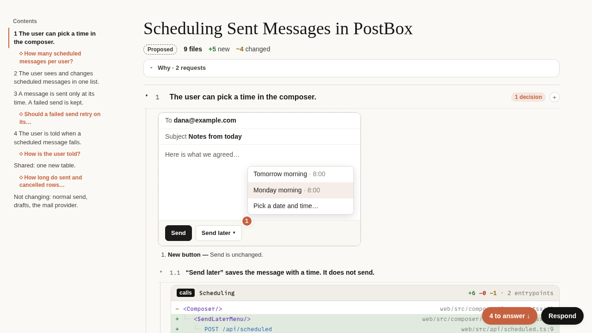

An agent picks one of three tiers for each visual.
A reader answers a plan in the page and copies one response.
Each closed claim shows the decisions under it.

The page keeps the state of the reader in the URL fragment.
The page shows “Copied” only after the browser copies the text.
pack writes one page and keeps the media as files.
pack accepts only the media types in the publish table.
Do we add audio types to the plans CLI later?
Publish loads the live page in a browser and looks for faults.
The squash commit on main holds no capability URL.
When land-merge removes a link or key from the squash message, what should it do?
Shared: the viewer CSP that every Document must pass.
Not changing: the plans CLI, plansd and the plugin version.
- The
plansCLI uploads media as it does today. - The plans plugin stays at version 0.1.0, with no Codex manifest.
- No audio type joins the publish table in this PR.